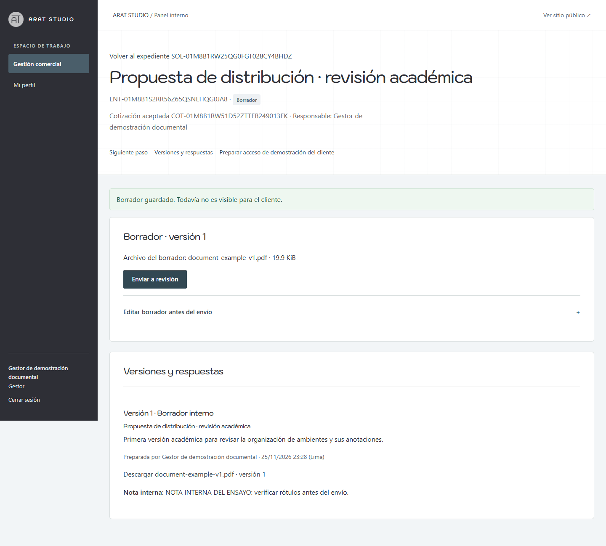

Gestor: archivo guardado como borrador privado Gestor: borrador en móvil de 360 px Gestor: versión 1 enviada a revisión Cliente: primera versión disponible para descargar y revisar Cliente: comentario obligatorio y error junto al campo Cliente: observación registrada sobre la versión 1 Gestor: consulta de observación e historial Gestor: segunda versión en borrador Cliente: segunda versión enviada y primera conservada Cliente: conformidad y respuestas por versión Cliente: conformidad en móvil de 390 px Cliente: conformidad en móvil de 360 px Cliente: conformidad en pantalla de 768 px Gestor: entregable finalizado y de solo lectura Administrador: consulta autorizada del entregable Administrador: catálogo de proyectos Administrador: catálogo de categorias Administrador: catálogo de servicios Administrador: catálogo de tarifas Gestor ajeno: acceso denegado Visor PDF: documento descargado de la versión 2 Formulario: navegación con Tab y foco visible Formulario: respaldo sin JavaScript PDF del escenario habitual: pendiente de respuesta PDF del escenario habitual: primera versión observada PDF del escenario habitual: segunda versión enviada PDF del escenario habitual: conforme Anterior Siguiente
Gestor: archivo guardado como borrador privado 
Abrir una imagen muestra su tamaño original. Las contraseñas, tokens y respaldos no se incluyen en esta galería. Los documentos de archivos/ son ficticios y están marcados como demostración académica.